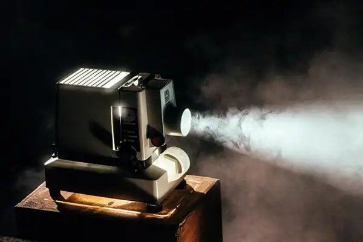

Чем может удивить кинотеатр? Этот формат развлечений стал традиционным, и кинотеатры даже борются за зрителя с помощью всевозможных акций, «ночей кино» и мероприятий с аниматорами. Расскажем об идее, которая способна перевернуть привычные представления о кинотеатре и ударить по рынку новизной.
Актуальность бизнес-идеи
Кино — один из самых актуальных и постоянно востребованных видов искусства и развлечения. Удивить здесь кого-то сложно, но британцы это смогли: в Великобритании известен проект Hot Tub Cinema — это как раз совмещенный с джакузи кинотеатр. Идея на стыке двух видов популярных развлечений — кино и сауны — в России может зайти на «ура». Однако открывать подобное заведение лучше в столицах — Москве или Санкт-Петербурге.
Затраты и прибыль
Вложения в этот бизнес по самым минимальным подсчетам начинаются с 410 тысяч рублей. Окупит проект себя через 5 месяцев при ежемесячной прибыли в 100 тысяч рублей.
Затраты на старте: примерный расчет для Москвы
- Оформление бизнеса 10 000
- Реклама и маркетинг 100 000
- Оборудование 218 000
- Ремонт и декор 60 000
- Прочее 22 000
- Итого 410 000
Ежемесячные затраты
- Расходные материалы 10 000
- Связь и интернет 5 000
- Заработная плата 80 000
- Маркетинг и продвижение 50 000
- Коммунальные платежи 20 000
- Аренда помещения площадью 50 метров 70 000
- Итого 235 000
Разрешения и документы
Регистрация бизнеса
Чтобы открыть подобное заведение, достаточно ИП на УСН по ставке 6% от прибыли. Для этого подойдет нехитрый список документов в налоговой и оплата госпошлины. Никаких разрешений дополнительно не требуется, кроме согласования помещения в Роспотребнадзоре и СЭС.
Список документов для открытия ИП
- Заявление о государственной регистрации физического лица в качестве индивидуального предпринимателя (форма № Р21001)
- Копия российского паспорта
- Квитанция об уплате госпошлины
Вперед и никогда не останавливайся
Выбор помещения
При выборе отталкивайтесь от двух параметров:
- Количества саун, которые вы хотите одновременно установить в одной комнатеМесторасположения — в центре дороже, в спальном районе, разумеется, аренда квадратного метра дешевле
- Место для будущей “кино-сауны” не столь принципиально: она может находиться и в спальном районе. Раскрутить ее вы сможете за счет маркетинга.
Рассмотрим помещение на 2 джакузи. В нем также будут находиться стол или барная стойка, большой домашний кинотеатр или плазма, большой мягкий диван для гостей, стулья или пуфы, место для одежды. Также перед входом в кинотеатр должна быть стойка администратора — в отдельном помещении. Примерная общая площадь — 60 квадратных метров.
Отделка пола и стен помещения должна быть выполнена плиткой — или стен хотя бы до середины. Заранее продумайте дизайн интерьера, детали, декор, цветовое решение и освещение для будущего кинотеатра. Посетителям должно быть комфортно, интерьер должен привлекать, но не отвлекать от просмотра.
Оборудование
- Бассейны-джакузи (2 шт) 90’000
- Домашний кинотеатр 100’000
- Резиновые коврики 2’000
- Стол или барная стойка 10’000
- Стулья 10’000Диван 20’000
- Освещение 15’000
- Вешалки, полотенца и прочее 25’000
- Онлайн-касса 30’000
- Стойка администратора 40’000
- Итого 218’000
Список оборудования может быть расширен по желанию владельца. В этой статье предполагается, что доставку еды в кинотеатр будут заказывать сами гости. Администратор может предложить напитки, а также скидку на доставку из определенных компаний-партнеров и прочие услуги. На входе можно поставить также вендинговые аппараты, микроволновку для попкорна, кулер.
Как выбрать поставщика
Чтобы сократить расходы, приобретите надувные джакузи: даже среди лучших брендов стоимость на них начинается от 40 тысяч рублей. Это значительно сэкономит расходы на закупку оборудования и монтаж. Такие ванны просто транспортировать и двигать, легко менять в них воду после гостей.Широко известны бассейны-джакузи от INTEX — полный набор обойдется в 40 тысяч рублей. Их можно приобрести на заказ на любом сайте-посреднике. Доставка и монтаж уже будут включены в стоимость.
Персонал
Эта бизнес-идея примечательна тем, что много персонала для работы не нужно. Достаточно пригласить одного администратора — или двух для сменной работы, если владелец не хочет работать сам. Можно нанять уборщицу, однако ее функции сможет выполнять и администратор, и получать чуть больше.
Заработные платы сотрудников:
- Администратор, 2 человека — 80’000 рублей
- Итого — 80’000 рублей
Администраторы работают посменно с 14 дня до 2 ночи — хотя график может быть расширен под конкретных клиентов. В их обязанности входит встреча гостей, прием заявок, подготовка помещения, уборка помещения, оказание различных услуг.
Свет, камера, мотор!
Как рекламировать бизнес
Нужно найти целевую аудиторию и рассказать ей о новом заведении: маркетинг для кинотеатра-джакузи крайне важен. Перед открытием организуйте масштабную кампанию в социальных сетях — привлеките грамотных специалистов с кейсами в соответствующей креативной сфере.
Используйте такие инструменты и методы:
- Таргетинг в соцсетях, поисковых системах, ретаргетинг
- Реклама на улице — баннерная, объявления, раздача листовок
- Подарки и акции на открытие
- Таргетинг по дням рождения
- Нативная реклама у блогеров, посты и статьи в местных пабликах и традиционных СМИ
Плюсы и минусы бизнес-идеи
Положительные моменты:
- Необычный бизнес, новая идея
- Высокая рентабельность в сфере услуг
- Возможность дополнительных продаж (алкоголь, еда)
Отрицательные моменты:
- Риск не найти отклика у аудитории при плохом маркетинге
- Опасность затопления, повышенное внимание к безопасности
- При высоких затрат — длительная окупаемость проекта